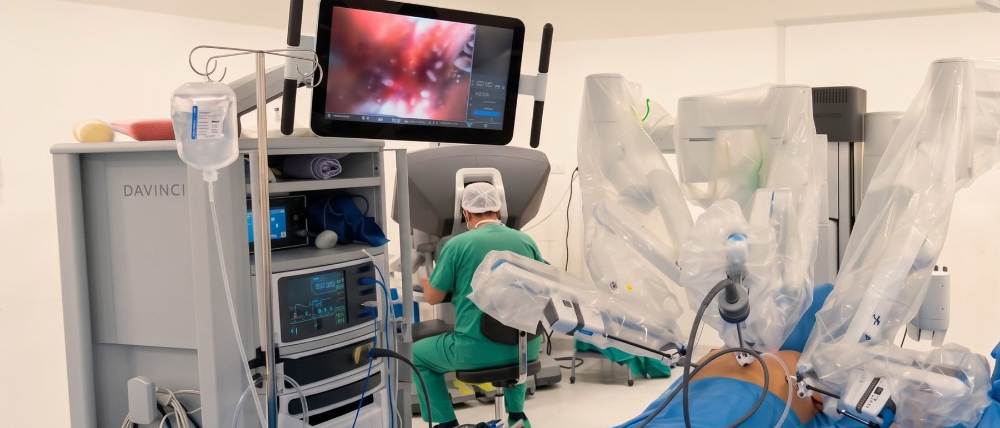
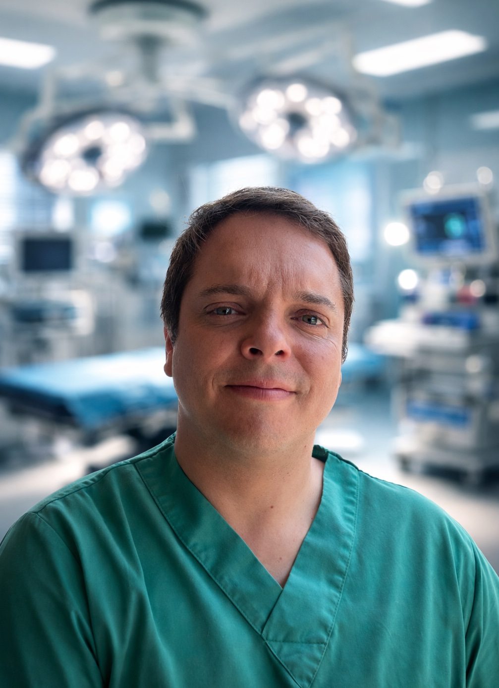

+200
cirugías RATS desde 2015
RATS · Dr. David Lazo Pérez

Sistema Da Vinci · Clínica Las Condes · Santiago
Agendar consultaLa plataforma más avanzada disponible para operar el tórax. Visión 3D amplificada 10×, siete grados de libertad, recuperación acelerada. El programa RATS más experimentado de Chile.
Sistema Da Vinci
El sistema Da Vinci no opera de forma autónoma. Traduce en tiempo real cada movimiento del Dr. Lazo con una precisión imposible de alcanzar a mano desnuda.
Imagen estereoscópica dentro del tórax con profundidad de campo superior a la cirugía abierta.
Los EndoWrist superan el rango de la muñeca humana. Disección precisa en espacios muy reducidos.
El sistema elimina el temblor involuntario de la mano, entregando movimientos más seguros y controlados.
El Dr. Lazo opera desde una consola de alta precisión con visión y control total en cada instante.
La robótica no es solo tecnología. Es una diferencia real y medible en tu experiencia y recuperación.
La precisión robótica permite disecar tejidos con un control vascular superior al de la cirugía abierta o convencional.
Incisiones de 1–2 cm en lugar de una toracotomía amplia. Menor trauma en músculos intercostales y costillas.
La mayoría de los pacientes abandona el hospital en 1–3 días. Con cirugía abierta el promedio es de 5–7 días.
Retorno a las actividades cotidianas en semanas. Menor impacto en la función respiratoria postoperatoria.
En cáncer pulmonar, la disección ganglionar robótica es más completa, mejorando la estadificación y resultados a largo plazo.
3–4 pequeñas incisiones de menos de 2 cm reemplazan la cicatriz lateral de 15–20 cm de una toracotomía clásica.
La mayoría de las cirugías torácicas pueden realizarse con abordaje robótico mínimamente invasivo.
Extirpación del timo por timoma o miastenia gravis. Ventajas significativas sobre la esternotomía convencional.
Resección de quistes y tumores del mediastino anterior, medio y posterior con mínima invasión.
Resección del esófago por cáncer. La robótica permite disección precisa en un espacio anatómico muy estrecho.
Resolución quirúrgica de tumores pleurales, empiema organizado y fibrotórax.
Resección de la primera costilla y liberación de los elementos neurovasculares comprimidos — rápida recuperación.
Causas, clínica, estudio y tratamiento robótico →Cirugía resectiva de tumores diafragmáticos y correctiva de eventraciones y relajaciones diafragmáticas sintomáticas.
Control del quilotórax, lesiones del conducto torácico y sus fístulas.
Identificación con verde de indocianina →La mayoría de las cirugías torácicas pueden realizarse con robótica. Agenda una evaluación para conocer tu opción.
Consultar →Ambas son mínimamente invasivas y evitan separar las costillas. La diferencia está en el instrumental: el sistema robótico aporta visión 3D magnificada y muñecas articuladas con mayor rango de movimiento, lo que facilita la disección en espacios estrechos como el mediastino o el hilio pulmonar. La VATS sigue siendo el estándar de referencia contra el cual se mide toda técnica nueva, incluida la robótica.
Principalmente resecciones pulmonares anatómicas (segmentectomía, lobectomía), timectomía, resección de masas y quistes mediastínicos, y disección ganglionar mediastínica. La indicación depende del caso: no todos los pacientes son candidatos y la decisión se toma tras evaluar imágenes, función pulmonar y etapificación.
Varía según el paciente, la extensión de la resección y las condiciones asociadas. En general, los abordajes mínimamente invasivos se asocian a menos dolor postoperatorio y estadías hospitalarias más cortas que la toracotomía. El plan de recuperación se define caso a caso en la consulta.
El Dr. David Lazo Pérez realiza cirugía torácica robótica en Clínica Las Condes (sistema privado) y en el Hospital Clínico San Borja Arriarán, donde funciona la Unidad de Cirugía Torácica y Broncoscopía Intervencional del sistema público.
La atención en Clínica Las Condes opera con cobertura de ISAPRE; el Hospital Clínico San Borja Arriarán corresponde al sistema público (FONASA). La cobertura específica depende de su plan y del procedimiento: conviene consultarla antes de la cita.
Se determina en la evaluación clínica. Se consideran el tipo y la ubicación del tumor o lesión, la etapificación, la función pulmonar y las comorbilidades. En algunos casos la VATS o la cirugía abierta siguen siendo la mejor opción — elegir bien el abordaje es parte del tratamiento.

Cirujano Torácico · Cirugía Robótica RATS
Fue el primero en desarrollar un programa sistemático de cirugía torácica robótica en Chile. Desde 2015 ha consolidado la mayor experiencia del país en RATS, operando con el sistema Da Vinci en Clínica Las Condes.
Con 19 años de experiencia y más de 5.700 cirugías torácicas, es también el cirujano con mayor experiencia en EBUS en Chile (+3.200 procedimientos desde 2010) y pionero en CryoEBUS a nivel latinoamericano.
Su formación, cargos y afiliaciones están detallados en el perfil del cirujano torácico en Santiago, y su trayectoria académica —formación, sociedades científicas y congresos fechados— en el currículum académico, junto a sus 31 publicaciones indexadas. Para el resto de la patología del tórax, la puerta de entrada es la consulta de cirugía de tórax.
Primer paso
